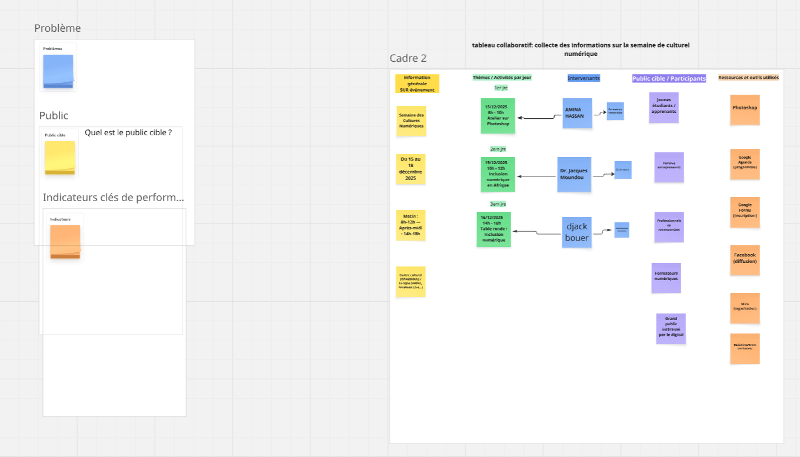

Projets Réalisés

Accompagnement numérique
Projet personnel d'accompagnement des entreprises vers la digitalisation et la gestion numérique des données.

Interfaces Web (Figma)
Réalisation d’interfaces de sites web avec Figma (prototypage, composants).

Wireframes basse & haute fidélité
Création avec Balsamiq et Justinmind.

Planification (Miro & Padlet)
Utilisation de Miro et Padlet pour organiser des projets collaboratifs.
Projets à Réaliser
Foyer Numérique
Créer un centre numérique pour accompagner les jeunes dans le domaine digital (espace d’apprentissage & d’expérimentation).

Révise ton cours
developpent d'un application Application mobile pour aider les élèves et étudiants à réviser efficacement leurs leçons.